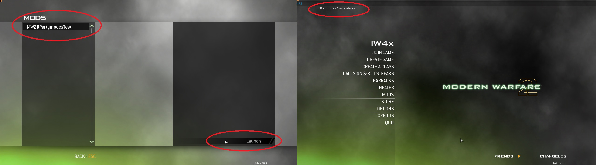

This guide will teach you the basics of what mods are and what they can contain and how to install them and run them on IW4x.
Mods can consist of anything from custom textures, new gamemodes, new weapons, edits of existing gamemodes, the list is endless... In IW4x mods are handled the same way as they were in Call of Duty: Modern Warefare (Call of duty 4). If you are familar with that games mod system great but if not I will briefly explain.
Mods are located within a folder conveniently named mods inside of your MW2 game folder (See folder structure screenshot below). Each mod has it's own sub folder inside of the mods folder. The name of that folder is how IW4x identifies each mod and it also determines the name that you will see in the mods menu inside of IW4x. Once you select a mod via the main menu the mods content is loaded into the games memory. It will overwrite any scripts / textures / ... with ones found in the loaded mods folder.
Once you have a mod downloaded and in the correct folder (mods) you can start the game up and select the mod in the main menu. Once you click 'Launch' the game will restart with the mod loaded.
This is a commonly asked question, unfortunately there is no central location for mod downloads so you will have to do a google search to find some.